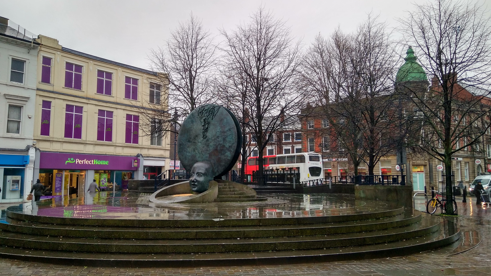
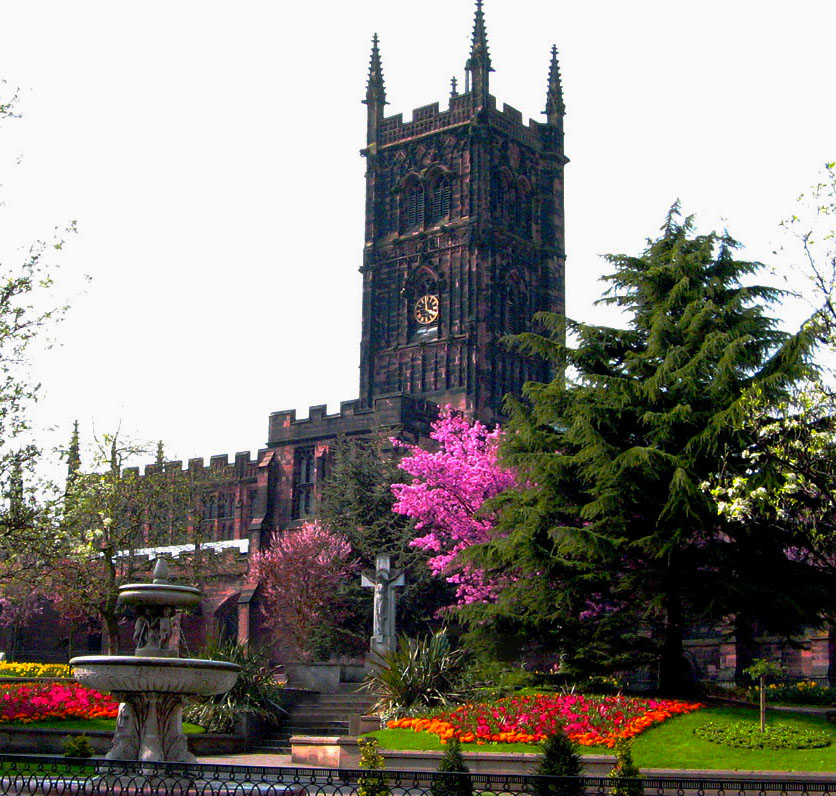
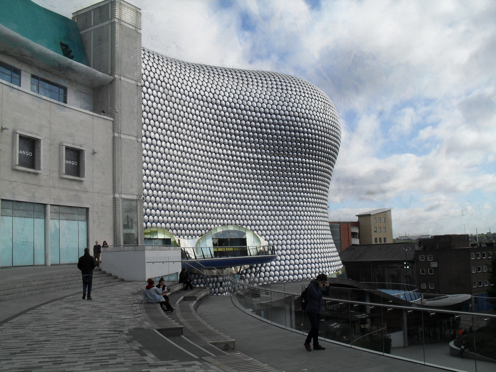

Walsall is an industrial town in the West Midlands of England. It is located 8 miles north-west of the City of Birmingham and 6 miles east of the City of Wolverhampton. Historically a part of Staffordshire, Walsall is a component area of the West Midlands. Walsall is the administrative centre of the wider Metropolitan Borough of Walsall. At the 2011 census, the town's built-up area had a population of 67,594, with the wider borough having a population of 269,323. Neighbouring cities include Darlaston, Brownhills, Willenhall, Bloxwich and Aldridge.
Wolverhampton is a city and metropolitan borough in the West Midlands, England. At the 2011 census, it had a population of 249,470. The demonym for people from the city is "Wulfrunian". Historically part of Staffordshire, the city is named after Wulfrun, who founded the town in 985, from the Anglo-Saxon Wulfrūnehēantūn. Alternatively, the city may have earned its original name from Wulfereēantūn after the Mercian King, who tradition tells us established an abbey in 659, though no evidence of an abbey has been found. The variation Wolveren Hampton is seen in medieval records.
Birmingham, is a city and metropolitan borough in the West Midlands of England, standing on the small River Rea. It is the largest and most populous British city outside London, with an estimated population of 1,101,360 as of 2014. Today Birmingham's economy is dominated by the service sector. The city is a major international commercial centre, ranked as a gamma+ world city by the Globalization and World Cities Research Network; and an important transport, retail, events and conference hub. Its metropolitan economy is the second largest in the United Kingdom with a GDP of $121.1 billions (2014), and its six universities make it the largest centre of higher education in the country outside London.
